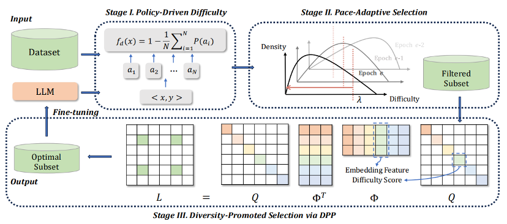

|
Hi! I'm a third-year undergraduate at Shanghai Jiao Tong University, majoring in Artificial Intelligence under the supervision of Prof. Weinan Zhang. Besides, I am a member of Guozhi class (held by Prof. Xiaoou Tang). Currently, I am a research intern in OpenRobotLab at Shanghai AI Lab advised by Dr. Jiangmiao Pang and Dr. Jingbo Wang. My current research is centered on Robot Learning and Control, with a specific focus on Humanoid Locomotion and Whole-Body Control. I am dedicated to developing effective robot learning-based training methods that prioritize agility, robustness, and safety. If you're interested in my research or would like to chat, feel free to drop me an email. |
Huayi Wang 「王华艺」 |
Publications |
|
BeamDojo: Learning Agile Humanoid Locomotion on Sparse Footholds
Huayi Wang, Zirui Wang, Junli Ren, Qingwei Ben, Tao Huang, Weinan Zhang†, Jiangmiao Pang† Robotics: Science and Systems (RSS), 2025 (Oral Presentation) [Website] [PDF] [Video] |
|
|
Learning Humanoid Standing-up Control across Diverse Postures
Tao Huang, Junli Ren, Huayi Wang, Zirui Wang, Qingwei Ben, Muning Wen, Xiao Chen, Jianan Li, Jiangmiao Pang† Robotics: Science and Systems (RSS), 2025 (Outstanding Systems Paper Award Finalist - Top 4) [Website] [PDF] [Video] |
|

|
VB-Com: Learning Vision-Blind Composite Humanoid Locomotion Against Deficient Perception
Junli Ren, Tao Huang, Huayi Wang, Zirui Wang, Qingwei Ben, Jiangmiao Pang†, Ping Luo† Under Review, 2025 [Website] [PDF] [Video] |
|  |
P3: A Policy-Driven, Pace-Adaptive, and Diversity-Promoted Framework for data pruning in LLM Training
Yingxuan Yang, Huayi Wang, Muning Wen, Xiaoyun Mo, Qiuying Peng, Jun Wang, Weinan Zhang† Under Review, 2024 [PDF] |
Education |

|
Shanghai Jiao Tong University
2022.09 - Present, Undergraduate Student Major: Artificial Intelligence Advisor: Prof. Weinan Zhang |
Experiences |
|
APEX Lab @ Shanghai Jiao Tong University
2023.12 - 2024.07, Research Assistant Research Topics: Reinforcement Learning, LLM Agent Advisor: Prof. Weinan Zhang |
|
|
OpenRobotLab @ Shanghai Artificial Intelligence Laboratory
2024.08 - Present, Research Intern Research Topics: Robot Learning, Humanoid Whole-Body Control Advisor: Dr. Jiangmiao Pang and Dr. Jingbo Wang |
Selected Award |
|
SenseTime Scholarship
(30 undergraduate AI researchers nationwide), SenseTime, 2025
|
|
Design and source code from Jon Barron's website. |